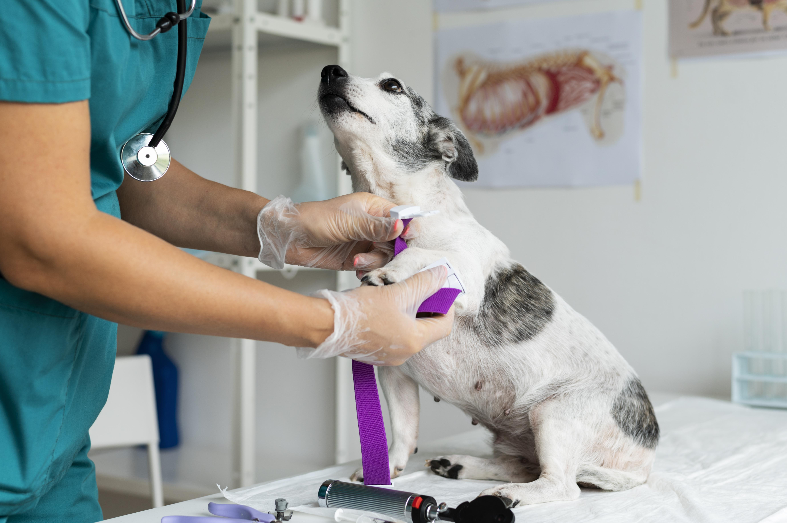

Tu familia veterinaria de confianza desde hace más de una década

Somos un equipo apasionado y comprometido con el bienestar de cada mascota que entra por nuestras puertas. Desde nuestra fundación, nos hemos dedicado a ofrecer un cuidado integral y personalizado, porque entendemos que cada mascota es un miembro importante de su familia.
Nuestro objetivo es brindar un entorno de confianza, donde usted y su mascota se sientan seguros y atendidos en cada visita. Creemos que la medicina veterinaria va más allá del tratamiento; se trata de crear vínculos duraderos y brindar esperanza a las familias.
Cada mascota recibe el mismo amor y cuidado que le daríamos a la nuestra
Nos mantenemos actualizados con los avances veterinarios
Entendemos que las mascotas son parte de la familia y las tratamos como tal
Mantenemos los más altos estándares de calidad en cada procedimiento
Ser conocidos por nuestro compromiso y amor por los animales
Dar un servicio que da prioridad a la vida y el bieniestar de las mascotas ante cualquier circunstancia
Lo que nos define como familia veterinaria y marca de confianza
La satisfacción de nuestros clientes es nuestra mayor recompensa
Más de una década cuidando la salud y bienestar de tus mascotas
Desde nuestros inicios en las instalaciones de San Juan de Dios de Desamparados, hemos evolucionado constantemente para brindar el mejor cuidado veterinario. Nuestra trayectoria nos ha permitido desarrollar una experiencia integral que combina conocimientos técnicos avanzados con un trato humano y personalizado.
Hemos crecido no solo en infraestructura y tecnología, sino también en la comprensión profunda de las necesidades únicas de cada mascota y su familia. Cada caso que atendemos nos enseña algo nuevo y nos fortalece en nuestro compromiso con la excelencia veterinaria.
Contamos con equipos para el diagnóstico de tus mascotas
Profesionales altamente capacitados y certificados